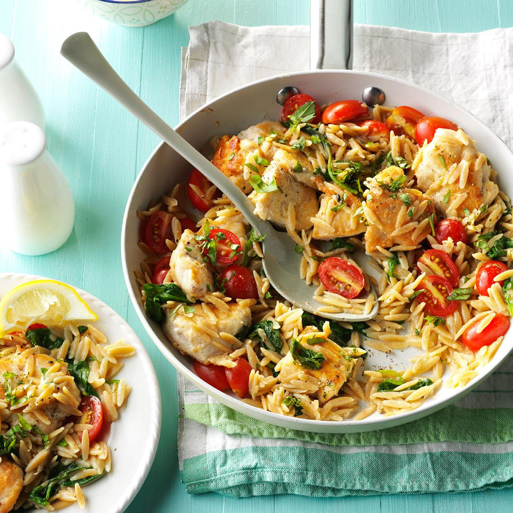

Delicious lemony chicken with orzo pasta! You can add any vegetables you like. I've included grape tomatoes and fresh spinach.

Ingredients
1/3 cup all-purpose flour
1 teaspoon garlic powder
1 pound boneless skinless chicken breast
3/4 teaspoon salt, divided
1/2 teaspoon pepper
2 tablespoons olive oil
1 can (14-1/2 ounces) reduced-sodium chicken broth
1-1/4 cups uncooked whole wheat orzo pasta
2 cups chopped fresh spinach
1 cup grape tomatoes, halved
3 tablespoons lemon juice
2 tablespoons minced fresh basil
(Optional) Lemon wedges
Instructions
In a shallow bowl, mix flour and garlic powder. Cut chicken into 1-1/2-in. pieces; pound each with a meat mallet to 1/4-in. thickness. Sprinkle with 1/2 teaspoon salt and pepper. Dip both sides of chicken in flour mixture to coat lightly; shake off excess.
In a large skillet, heat oil over medium heat. Add chicken; cook 3-4 minutes on each side or until golden brown and chicken is no longer pink. Remove from pan; keep warm. Wipe skillet clean.
In same pan, bring broth to a boil; stir in orzo. Return to a boil. Reduce heat; simmer, covered, 8-10 minutes or until tender. Stir in spinach, tomatoes, lemon juice, basil and remaining salt; remove from heat. Return chicken to pan. If desired, serve with lemon wedges.